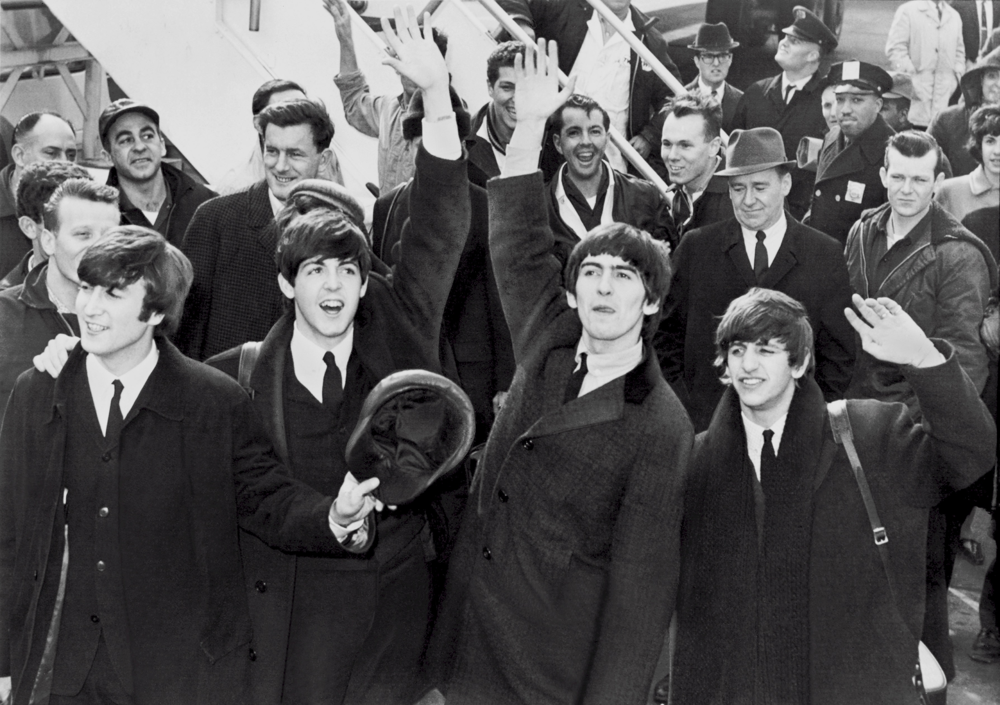

Since bursting onto the music scene in the early 1960s, The Beatles have left an indelible mark on the world of music and popular culture. Their influence extends far beyond their era, shaping the landscape of music for generations to come. From their innovative sound to their cultural impact, The Beatles continue to inspire artists and captivate audiences worldwide.
One of the most significant contributions of The Beatles is their groundbreaking approach to songwriting and musical experimentation. They pushed the boundaries of traditional pop music, incorporating elements of rock, folk, psychedelia, and Indian classical music into their repertoire. Their willingness to experiment with new sounds and techniques revolutionized the way music was created and perceived. Songs like "Yesterday," "Eleanor Rigby," and "A Day in the Life" showcase their mastery of melody, harmony, and storytelling, setting a new standard for songwriting excellence.
The Beatles' influence extends beyond their musical innovations to their cultural impact. They embodied the spirit of the 1960s, reflecting the social and political upheavals of the time. Through their music, they addressed themes of love, peace, and social change, resonating with a generation that sought to challenge the status quo. Their embrace of countercultural ideals and advocacy for peace and love left an indelible mark on the collective consciousness of society.
The Beatles' influence can be seen in their enduring popularity and lasting legacy. Despite disbanding in 1970, their music continues to resonate with listeners of all ages. Their songs remain timeless classics, transcending generational boundaries and cultural divides. From sold-out tribute concerts to endless cover versions, The Beatles' music lives on, inspiring new generations of musicians and fans alike.
The Beatles' influence on music and popular culture is undeniable. Through their groundbreaking music, cultural impact, and lasting legacy, they have left an indelible mark on the world. As we celebrate their timeless contributions, we are reminded of the power of music to unite, inspire, and transcend the passage of time. The Beatles will forever be remembered as pioneers, visionaries, and icons of the modern era.